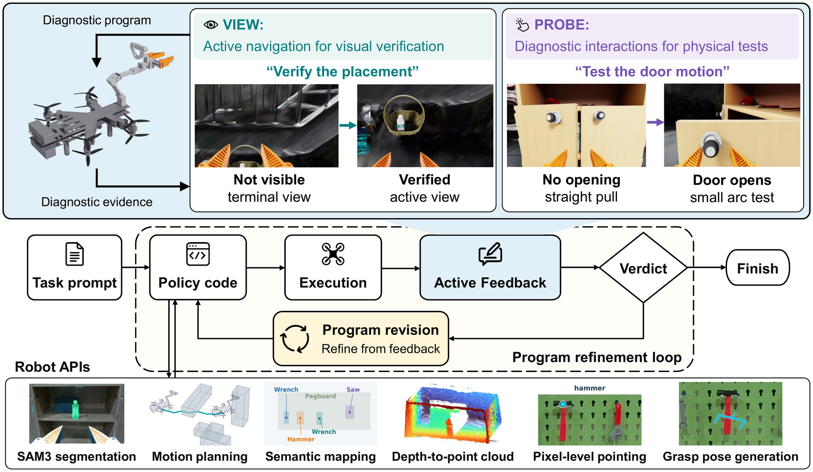

Language → Code → Flight
Fly-by-Code.
Embodied coding agents for
Real-world aerial manipulation.
Research film
From code to flight.
Explore the digital twin, active diagnosis, and real-world aerial manipulation.
01 / Active Feedback
Program refinement in simulationWrite code.
Resolve uncertainty.
When execution leaves questions open, the coding agent writes a diagnostic program to look again or test a physical hypothesis—then uses the evidence to assess completion and revise its task code.
 View / Look againDid it land in the basket?New viewpoints reveal a failed placement.
View / Look againDid it land in the basket?New viewpoints reveal a failed placement.
Recorded simulation case. Code, console output, and agent quotations are excerpts; omissions are marked […]. Image notes are inspection questions written before capture.
Evidence against a reported success — 2-Objects Pick-and-place
The task program reports success
hammer done: True [...] wrench done: True
The agent names what the evidence does not show
“The previous program reports both parts done, but neither is confirmed.”
Hammer. […] “That shows the hammer left the hand, not that it landed inside the basket. It could have dropped beside the basket or onto the stairs. I need a view looking down into the basket.”
Wrench. […] “I need to look at the upper shelf more closely from above, then at the lower shelf and the floor in front of the cabinet, and write down where the wrench actually is.”
It writes a diagnostic program: move, observe, attach a question
def look(target, offsets, note): target = np.asarray(target, float) for off in offsets: vp = target + np.asarray(off, float) if go(vp, target - vp): return get_observation(note=note) # [...] fl = np.array([3.55, cc[1], 0.05]) o = look(fl, [[-0.8, 0, 1.0], [-1.0, 0.3, 1.1]], "Floor in front of the cabinet's open face: did the wrench fall to the floor?") report(o, ["wrench"])
Returned diagnostic views, measurements, and the agent’s image notes


[wrench] score 0.91 [...] med [ 3.567 0.953 -0.009] [...] [hammer] score 0.92 [...] med [ 2.463 3.979 -0.009] [...]
Decision and the next program
REGENERATE — the next program adds a release-and-hold routine, revises the hammer release pose, and tries deeper wrench placements.
def release_and_hold(): open_gripper() p = pos() goto_pose(p, settle=True) # hold still ~3 s so the object drops free get_observation() open_gripper()
The trial succeeded on the fourth task execution. The case shows AF producing evidence against a reported completion and directing the revision.
 Probe / Test a hypothesisWhy does the box keep turning?Contact tests guide the next pushing strategy.
Probe / Test a hypothesisWhy does the box keep turning?Contact tests guide the next pushing strategy.
Recorded simulation case. These are sequential diagnostic observations, not a controlled contact-location ablation. Code and console excerpts retain their original values.
Box alignment: testing alternative contact points
After repeated pushes kept rotating a carton, the agent used AF to test alternative contact locations and sideways slides.
Agent’s recorded AF analysis: which push reduces rotation?
“My working guess is sideways friction drag.” […]
“I need controlled experiments to learn how much each action twists the carton: centre push, high-edge push, low-edge push, and a push followed by a small sideways slide while still in contact.”
Generated diagnostic code: compare contact actions
The program tested these actions sequentially, returning to the same viewpoint after each probe to measure the response from RGB-D observations. In the code and console below, “hi-edge” and “lo-edge” are the carton’s left and right edges in the head-on camera view, and “drag +y” / “drag -y” are small slides to the left / right.
open_gripper() # [...] exps = [("centre", 0.0, 0.0), ("hi-edge", +1, 0.0), ("lo-edge", -1, 0.0), ("centre+drag+y", 0.0, +0.015), ("centre+drag-y", 0.0, -0.015), ("hi-edge", +1, 0.0)] for name, where, drag in exps: # [...] r = go(G, approach=N, z_approach=0.15, allow_contact=True, settle=True) # [...] if drag != 0.0 and r: G2 = G + np.array([0.0, drag, 0.0]) go(G2, approach=N, allow_contact=True, settle=True) # [...] # [...] f2, s2 = measure_B("after " + name)
Returned diagnostic views, measurements, and the agent’s image notes
RESULT centre: centre moved 0.0285, yaw change -3.17 deg RESULT hi-edge: centre moved 0.0385, yaw change -0.31 deg RESULT lo-edge: centre moved 0.0241, yaw change -4.01 deg RESULT centre+drag+y: centre moved 0.0439, yaw change -4.56 deg RESULT centre+drag-y: centre moved 0.0426, yaw change -4.75 deg RESULT hi-edge: centre moved 0.0430, yaw change -2.11 deg

The first left-edge push produced less rotation per unit of advance than the centre and right-edge pushes. Neither sideways slide reversed the rotation.
Decision and subsequent policy revision
REGENERATE — the next program initialized a linear push-response model from the diagnostic observations and used it to select the lateral contact position.
# ---------------- twist model: yaw change (deg) per cm of push = alpha + beta*u ---------------- # u = contact offset from face centre / half-width (+ toward +y). Prior from observed pushes: # [...] w = y2 - y1; yc = 0.5 * (y1 + y2) # [...] alpha, beta = twist_model() # [...] u = float(np.clip((rate_des - alpha) / beta, -0.82, 0.82)) yp = yc + u * w / 2.0 # [...] if dc_cm > 0.4: twist_data.append((u, dpsi / dc_cm, min(2.0, dc_cm / 2.0)))
How the diagnostic loop works

Task and diagnostic programs use the same robot APIs. Diagnosis starts from the post-execution state; the score is recorded before diagnosis, and the scene resets before the next task attempt. The returned evidence informs both the completion judgment and program revision.
02 / Real-world experiments
Simulation-synthesized task codeWritten in simulation.
Flown in reality.
Shared robot APIs deploy the task program on our aerial manipulator without source-code changes.
Open. Retrieve. Deliver.
Open both cabinet doors, grasp the bottle inside, and carry it to the hanging basket.
Two objects. One task program.
Pick the hammer from the pegboard and place it in the basket, then carry the wrench to the upper shelf.
Trial outcomes & hardware
A custom coaxial quad-tiltrotor carries a four-degree-of-freedom arm and wrist RGB-D camera. Trials vary the robot’s initial position and heading; object placements differ from simulation. The videos show successful runs, while the counts below include all evaluated trials, including unreached stages.
| Task | Outcome | Successful trials |
|---|---|---|
| Tool pick-and-place | Grasp hammer | 5/5 |
| Place hammer in basket | 4/5 | |
| Grasp wrench | 5/5 | |
| Place wrench on shelf | 5/5 | |
| Full task | 4/5 | |
| Water-bottle delivery (Cabinet door opening) | Open left door | 5/5 |
| Open right door | 4/5 | |
| Grasp bottle | 4/5 | |
| Place bottle in basket | 3/5 | |
| Full task | 3/5 |
03 / Results
Six tasks · two simulated environmentsBetter evidence.
Better task programs.
Same primary coding agent and task-execution limit; 10 trials per task and condition. AF adds diagnostic inference and interaction.


CaP-X → CaP-X + AF / 60 trials each
| Method | Per task (TP / FP / ND) | Overall | ||||||
|---|---|---|---|---|---|---|---|---|
| Cabinet | 1-Obj P&P | 2-Obj P&P | Payload | Align | Sort | TP / FP / ND | Precision | |
| CaP-X | 1/1/8 | 9/1/0 | 4/5/1 | 3/6/1 | 0/10/0 | 2/2/6 | 19/25/16 | 43.2% |
| CaP-X+Trace | 0/3/7 | 10/0/0 | 6/3/1 | 6/3/1 | 3/7/0 | 4/3/3 | 29/19/12 | 60.4% |
| Ours (CaP-X+AF) | 4/1/5 | 10/0/0 | 9/1/0 | 10/0/0 | 7/3/0 | 5/0/5 | 45/5/10 | 90.0% |
TP: correct completion declaration. FP: incorrect declaration. ND: no declaration before the step limit. Precision = TP / (TP + FP).
Swipe the chart or table horizontally to see all details.
Evaluation setup
The primary agent is Claude Opus 5 in a persistent session. All three conditions share perception, control and semantic-map APIs, the skill library, and task-execution limit. CaP-X receives logs and the terminal RGB observation; Trace adds primitive-call records and execution keyframes; AF adds a generated diagnostic program. Every revised task program restarts from the initial state and must perform the full task.
Explore the task environments

The six tasks are one- and two-object pick-and-place, Sort, Align, Cabinet, and Payload. The latter four are shown above; robot poses and paths are montage annotations.
- Sort
- Place the target bottle in the color-matched bin.
- Align
- Push protruding boxes into alignment with the rack.
- Cabinet
- Open the doors, retrieve the bottle, and deliver it to the basket.
- Payload
- Transport bottles and baskets with minimal hall crossings under an undisclosed payload limit.
Read the abstract
Embodied coding agents emerge as a promising approach to construct robot policies from natural-language instructions. However, extending these agents to physically demanding settings introduces two fundamental challenges: partial observability and limited interaction robustness. These challenges can leave task-critical outcomes unobserved, and failures remain unresolved, making execution feedback insufficient for completion assessment and program revision. To address these gaps, we introduce Active Feedback (AF), an active “View and Probe” framework. After each task execution, the agent synthesizes a separate diagnostic program to acquire informative viewpoints or perform targeted physical tests in simulation, returning evidence for completion assessment and program revision. We study AF in aerial manipulation, where payload constraints limit onboard sensing and exacerbate partial observability, while strong dynamic coupling and limited control margins make physical interactions fragile. Across six aerial manipulation tasks, AF increases final task success from 31.7% to 75% relative to terminal feedback, using the same coding-agent configuration and task-execution limit. The task programs synthesized in simulation transfer directly to a physical aerial manipulator via shared APIs without task-program source-code modifications and successfully execute multi-stage tasks in the real world. These results show that executable diagnosis helps embodied coding agents address gaps in execution feedback, improving both completion assessment and program refinement for autonomous aerial manipulation.